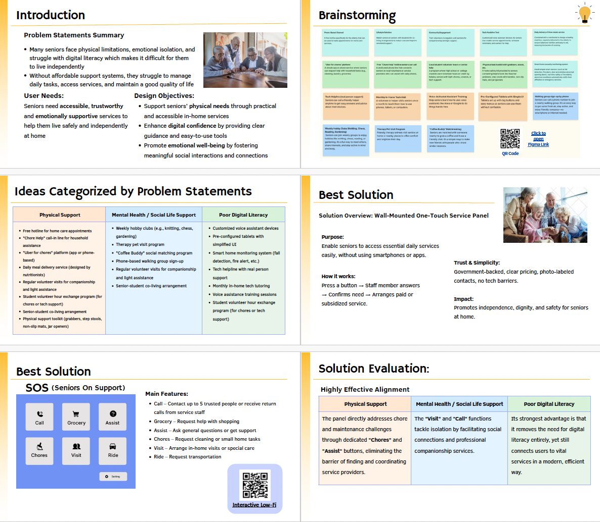
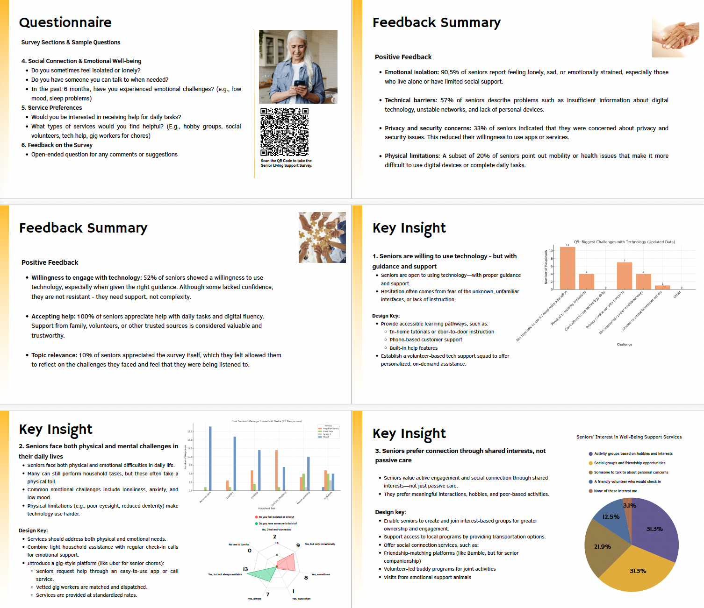
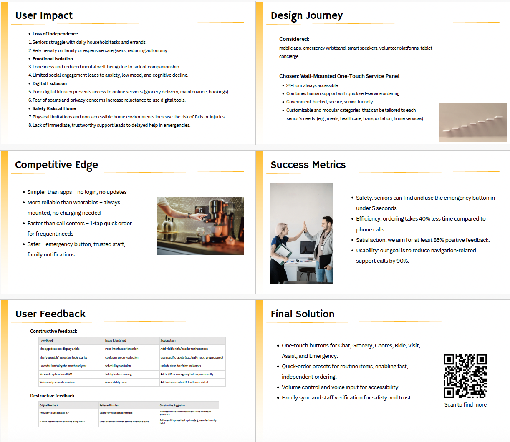

SOS Panel
Core Competencies Applied
User Research
Conducted surveys with 20+ valid responses and in-depth interviews to uncover core challenges in safety and social isolation.
Data Visualization
Transformed complex survey findings into visual data to highlight seniors' reliance on household tasks and loneliness levels.
Empathy Mapping
Synthesized user thoughts, feelings, and behaviors into comprehensive maps to drive empathy-centered design decisions.
Feedback Categorization
Systematically grouped constructive and destructive user feedback to prioritize high-impact usability issues.
Wireframing
Sketched and iterated early layouts for a specialized wall-mounted SOS panel to ensure intuitive physical interaction.
Interactive Prototyping
Developed the "Jeremy" high-fidelity prototype in Figma to simulate real-world emergency calls and chore request flows.
Usability Testing
Executed peer testing sessions to refine button accessibility, navigation clarity, and overall task success rates.
Visual Journey


